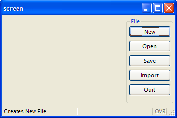
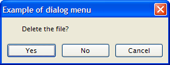
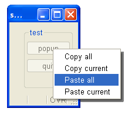
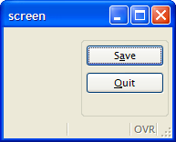

Summary:
See also: Dynamic User Interface
A Menu defines a list of options (also called actions) that can trigger program routines. The MENU statement is an interactive instruction defining the possible actions that can be executed in a specific context at a given place in the program. One Menu can only define a set of options for a given level. You cannot define all menu options of your program in a unique Menu; you must use nested Menu calls. A typical application starts with a global Menu, defining general options to access sub-routines, which in turn implement specific Menus with options like 'Append', 'Delete', 'Modify', and 'Search' that trigger sub-routines to manage database records.
By default, if no explicit action views are associated with Menu options, these options are displayed as simple push buttons in a specific area, depending on the front end. The following screen is produced by the program shown in Example 2 with the desktop front-end:

You can display a Menu in a modal dialog window by setting some attributes, as shown in the source code of Example 3. In this case, if the user clicks on an options, the MENU instruction will automatically exit and the modal dialog window will be clause (there is no need for an EXIT MENU command):

Menus can also be displayed as popup choice lists, as illustrated in Example 4. Like for modal dialog menus, there is no need for an EXIT MENU command to leave the MENU instruction, it will close automatically when an option is selected by the user:

A MENU statement is a controller for user actions. You bind actions views with Menu options by name. For example, if your Menu contains ON ACTION sendmail, you can specify which action view the user would use to trigger the sendmail action by:
Action views are bound to an action controller by name. See the Interaction Model description for more details.
For more details about default and explicit action views, see Interaction Model.
The MENU instruction defines a set of user choices.
MENU [title]
[ ATTRIBUTES ( control-attributes ) ]
[ BEFORE MENU
menu-statement
[...]
]
menu-option
[...]
END MENU
where menu-option is one of:
{ COMMAND
option-name [option-comment] [ HELP help-number ]
menu-statement
[...]
| COMMAND KEY ( key-name )
option-name [option-comment] [ HELP help-number ]
menu-statement
[...]
| COMMAND KEY ( key-name )
menu-statement
[...]
| ON ACTION action-name
menu-statement
[...]
| ON IDLE idle-seconds
menu-statement
[...]
}
where menu-statement is:
{ statement
| CONTINUE MENU
| EXIT MENU
| NEXT OPTION option
| SHOW OPTION { ALL |
option [,...] }
| HIDE OPTION { ALL |
option [,...] }
}
The following table shows the control-attributes supported by the MENU statement:
| Attribute | Description |
| STYLE = string | Defines the type of the menu. Values can be
'default', 'dialog' or 'popup'. |
| COMMENT = string | Defines the message associated with this menu. |
| IMAGE = string | Defines the icon file associated with this menu. |
The MENU instruction can be used to control user actions. See Interaction Model for more details about actions.
The typical usage of a MENU instruction is show in the following example, using a set of ON ACTION control blocks:
01MENU02ON ACTION new03CALL newFile()04ON ACTION open05CALL openFile()06ON ACTION quit07EXIT PROGRAM08END MENU
The COMMAND clause defines both the action name and the label of the menu option, which is by default decorated on the front end side as a push-button in a specific area. The ON ACTION clause defines an action trigger clause as described in Interaction Model, Controlling User Actions section. To write abstract code, we recommend that you use the ON ACTION clause instead of COMMAND. However, when using 'dialog' menus, you might only need to provide the title of the buttons; in such situations, you can use COMMAND clauses.
When the STYLE instruction attribute is set to 'default' or when you do not
specify the menu type, the runtime system
generates a default decoration as a set of buttons in a specific area of the
current window. When this attribute is set to 'dialog',
the menu options appear as buttons at the bottom in a temporary modal window, in which
you can define the message and the icon with the COMMENT and IMAGE
attributes. When the STYLE is set to 'popup', the menu
appears as a popup menu (contextual menu).
Warning: If the menu is a "dialog"
or "popup", the dialog is automatically exited after any
action clause such as ON ACTION, COMMAND or ON IDLE.
When an MENU instruction executes, the runtime system creates a set of default actions. The following table lists the default actions created for this dialog:
| Default action | Control Block execution order |
| close | Created to execute COMMAND KEY(INTERRUPT) if used (can be
overwritten with ON ACTION close) Default action view is hidden. See Windows closed by the user. |
| help | Shows the help topic defined by the HELP clause. Default action view is hidden. |
If the menu block contains a BEFORE MENU clause, statements within this clause will be executed before the menu is displayed.
The ON ACTION action-name clause defines a set of instructions to be executed when an action is fired.
When you enter a MENU statement, you are entering an interactive instruction, also known as a dialog. During a dialog, you can enable or disable an action with the setActionActive() method of the DIALOG object. You can also hide and show the default action view with the setActionHidden() method of the DIALOG object.
01...02BEFORE MENU03CALL DIALOG.setActionActive("query",FALSE)04CALL DIALOG.setActionHidden("adduser",TRUE)05...
The ON IDLE idle-seconds clause defines a set of instructions that must be executed after idle-seconds of inactivity. This can be used to quit the dialog after the user has not interacted with the program for a specified period of time. The parameter idle-seconds must be an integer literal or variable. If it evaluates to zero, the timeout is disabled.
01...02ON IDLE 1003IF ask_question("Do you want to leave the dialog?") THEN04EXIT MENU05END IF06...
CONTINUE MENU statement causes the runtime system to ignore the remaining instructions in the current block and redisplay the menu.
EXIT MENU statement terminates the MENU block without executing any other statement.
The NEXT OPTION option statement defines option as the default. This cannot apply to a hidden option, and works only with default action views created when an explicit view is not used.
The SHOW OPTION and HIDE OPTION statements are provided for backward compatibility only. The SHOW OPTION statement is used to make the default action view visible and the explicit action views enabled. The HIDE OPTION statement is used to make the default action view invisible and the explicit action views disabled. The ALL clause can be used to specify all options. It is now recommended that you hide and show action views with the setActionHidden() method of the DIALOG object.
When a Menu instruction executes, the first letter of the display text on the action view is, by default, underscored. For an action views where the underscored letter is not shared with other action views, pressing the key corresponding to that letter will execute that action. For an action view where the underscored letter is shared with other action views surfaced by the Menu statement, pressing the key corresponding to that letter will toggle the focus between all action views that share the same letter. For example:
In this example, if you press "S", the action "start" will be performed. If you press "C", the focus will toggle between "cmdone" and "cmdtwo". If you press "Q", the action "quit" will be performed.01MENU02COMMAND "Start"03DISPLAY "Start"04COMMAND "cmdone"05DISPLAY "Command 1"06COMMAND "cmdtwo"07DISPLAY "Command 2"08COMMAND "Quit"09EXIT MENU10END MENU
For information on specifying an alternate accelerator key using the ampersand (&), see "Using the COMMAND clause" below.
When using the COMMAND clause, the name of the action will be the option text converted to lowercase letters. The text and comment decoration attributes for the default action view will get the value of the option text and comment text of the menu clause. As these attributes are defined by the program, the corresponding text and comment attributes in Action Defaults are not applied to these menu options. For example, when you define a COMMAND "Hello" "This is the Hello option" menu option, the name of the action will be "hello", the button text will be "Hello", and the comment will be "This is the Hello option", even if an action default defines a different text or comment for the action "hello".
With the COMMAND clause, if the user includes an ampersand (&) in the option text, the system transforms it as an accelerator for the next character. The ampersand is not considered when determining the name of the action. For example:
01MENU02COMMAND "S&ave"03...04COMMAND "&Quit"05EXIT MENU06END MENU
In the first COMMAND clause of this example, the name of the action will be "save", the button text will be "Save" (with the "a" underscored), and the accelerator key for this command will be Alt+A. In the second COMMAND clause in this example, the name of the action will be "quit", the button text will be "Quit" (with the "Q" underscored), and the accelerator key for this command will be Alt+Q.

When the COMMAND KEY specifies an option text (as in COMMAND KEY(F10,F12) "Hello") the name of the action is defined by the option text, in lowercase letters (i.e. "hello"). If the COMMAND KEY does not specify the option text, the action name defaults to the last key of the list in lowercase letters. For example, if you write COMMAND KEY(F10,F12,Control-Z), the name of the action will be "control-z". So if you want to define action defaults for a COMMAND KEY using multiple keys, you must use the last key for the name of the action.
A COMMAND KEY clause implicitly defines up to four accelerator attributes for the action. The corresponding Action Defaults accelerators will be ignored. For backward compatibility, the COMMAND KEY instruction supports up to four keys. Each four keys are used to initialize the acceleratorName, acceleratorName2, acceleratorName3 and acceleratorName4 attributes of the action. Missing accelerators will be assigned from Action Defaults. For example, when you define a COMMAND KEY(F10,F12) "Hello" menu option, acceleratorName will be "F10" and acceleratorName2 will be "F12", even if an Action Defaults for the action "hello" defines acceleratorName as "F5" and acceleratorName2 as "control-f". However, you can set the third accelerator with the acceleratorName3 attribute in Action Defaults.
By default, COMMAND KEY actions are not decorated with a default button in the action frame (i.e. default action view). You can show the default button by configuring a text attribute with the Action Defaults.
01MENU02ON ACTION new03CALL newFile()04ON ACTION open05CALL openFile()06ON ACTION save07CALL saveFile()08ON ACTION import09LOAD FROM "infile.dat" INSERT INTO table10ON ACTION quit11EXIT PROGRAM12END MENU
01MENU "File"02COMMAND KEY ( CONTROL-N ) "New" "Creates New File" HELP 10103CALL newFile()04COMMAND KEY ( CONTROL-O ) "Open" "Open existing File" HELP 10205CALL openFile()06COMMAND KEY ( CONTROL-S ) "Save" "Save Current File" HELP 10307CALL saveFile()08COMMAND "Import"09LOAD FROM "infile.dat" INSERT INTO table10COMMAND KEY ( CONTROL-Q ) "Quit" "Quit Program" HELP 20111EXIT PROGRAM12END MENU
01MAIN02MENU "Example of dialog menu"03ATTRIBUTES ( STYLE="dialog", COMMENT="Delete the file?" )04COMMAND "Yes"05DISPLAY "Yes"06COMMAND "No"07DISPLAY "No"08COMMAND "Cancel"09DISPLAY "Cancel"10END MENU11END MAIN
01MAIN02DEFINE r INTEGER03MENU "test"04COMMAND "popup" DISPLAY popup()05COMMAND "quit" EXIT MENU06END MENU07END MAIN0809FUNCTION popup()10DEFINE r INTEGER11LET r = -112MENU "unused" ATTRIBUTES ( STYLE="popup" )13COMMAND "Copy all" LET r = 114COMMAND "Copy current" LET r = 215COMMAND "Paste all" LET r = 316COMMAND "Paste current" LET r = 417END MENU18RETURN r19END FUNCTION